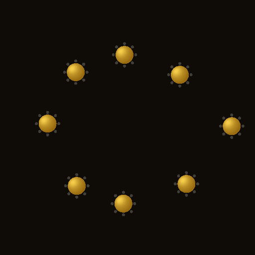
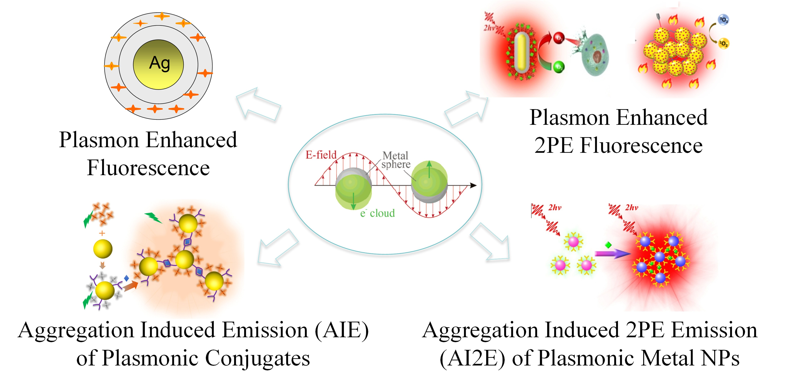
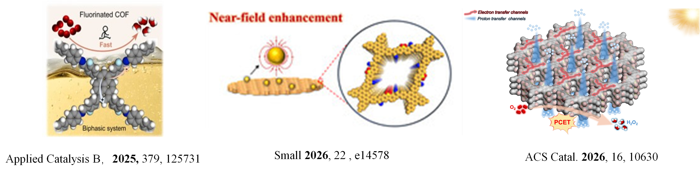
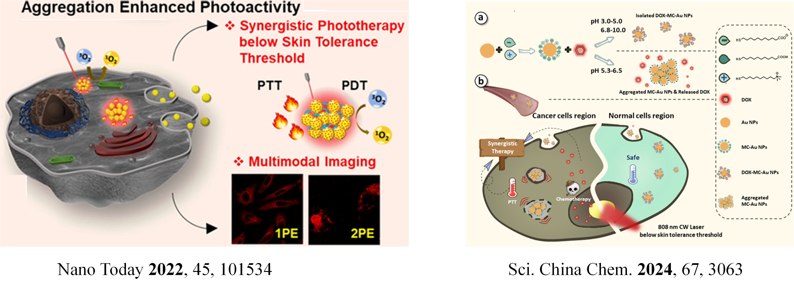
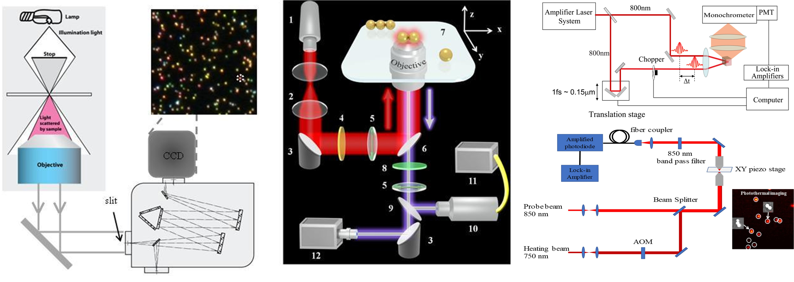

|
 |
Research Summary：Our research group focuses on investigation of optical and electronic properties of various nanocomposites, low-dimensional materials, and heterojuction nanostructures (semiconductor–semiconductor or metal–semiconductor). We explore their dynamics, interfacial processes and underlying mechanisms with the ultimate goal of developing applications in fields such as optoelectronics, energy, environment, and biomedicine. Our primary research areas include metal/semiconductor based nanocomposite materials, biomedical materials, nonlinear optical materials, photocatalysis, biological sensing, imaging and light-driven cancer therapy. Specific research directions include:：
i）Nanocomposite Materials with Plasmon Enhanced Optical Properties and Their Applications
Metal nanoparticles exhibit unique localized surface plasmon resonance (LSPR) effects, which can be utilized to enhance the optical properties of the nanoparticles themselves or nearby small molecules，such as metal-enhanced fluorescence (MEF) and surface-enhanced Raman spectroscopy (SERS). Our research group has previously developed techniques such as aggregation-induced two-photon luminescence enhancement (AI2E) of metal nanoparticles as well as aggregation-induced emission (AIE) enhancement in plasmonic metal–chromophore conjugates.
|
 |


iii）Biosensing, Bioimaging and Imaging-Guided-Therapy
To address the critical need for early, precise diagnosis, treatment efficacy evaluation, and recurrence monitoring of major diseases such as cancers, digestive system diseases, and skin infections, our research focuses on developing advanced biomedical materials and diagnostic imaging technologies. Building upon our prior work on aggregation-induced emission (AIE) enhancement of metal nanoparticles, we aim to engineer diagnostic agents and techniques, spanning fluorescence/near-infrared, ultrasound, and Raman modalities that feature disease-targeting capabilities, responsiveness to disease microenvironments, signal amplification, and multi-modal imaging. By integrating methods such as microfluidic enrichment and optical signal modulation for noise reduction, we will achieve highly sensitive detection of disease-related biomarkers, facilitating the early and accurate diagnosis of major diseases. Furthermore, leveraging imaging guidance, we will employ photothermal therapy, light-controlled drug release, and photocatalytic effects to precisely eliminate tumor cells or diseased tissues, thereby realizing an integrated "theranostic" (diagnostic and therapeutic) approach.

iv) Femtosecond Laser Spectroscopy and Imaging
In addition to synthesizing various nanocomposite mayerials, investigating their optical properties, and exploring their health-related applications, we will also develop and utilize a range of spectroscopic (e.g., multi-beam ultrafast spectroscopy, single-particle spectroscopy) and imaging (e.g., fluorescence, photoacoustic, two-photon-excitation) techniques. These tools are employed to characterize the linear and nonlinear optical properties of these materials, study their dynamic processes such as photo-responses (luminescence, photothermal, photoacoustic, photophysical, and photochemical phenomena), energy and electron transfer. Ultimately, we will develop various optical characterization, sensing, and multi-photon imaging technologies and instrumentation.
